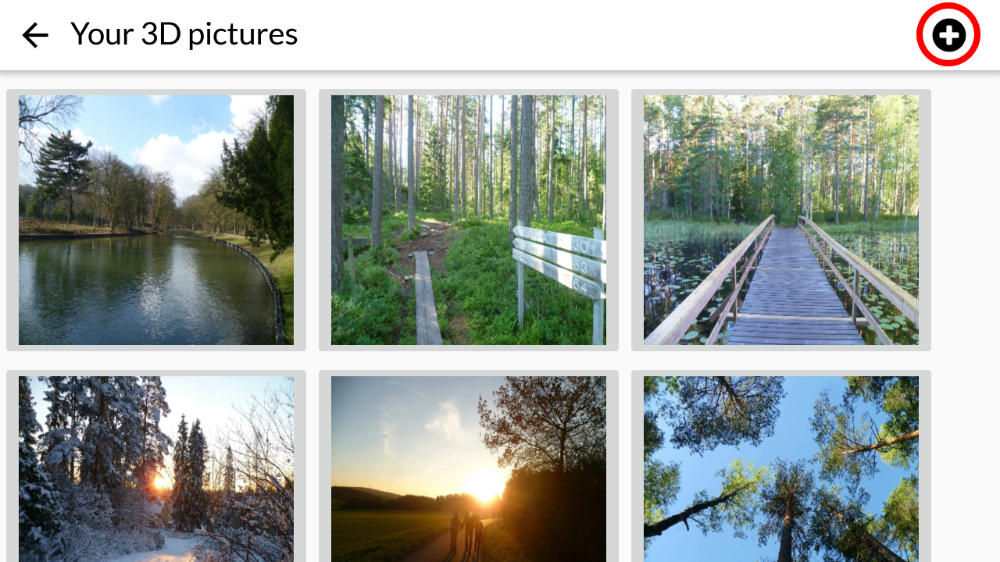

3D images are generated when each eye sees a slightly different image, resulting in the illusion
of depth. With the Orbis camera, you will be able to create your own 3D photographs.
- First, press the + at the top right of the gallery page. Select ‘Take’. Take a photo of your
object.
- Then, holding the camera as steady as possible, move your phone approximately 7
centimetres to the right, and take another photo. Orbis will stitch the photos together and
distort them accordingly.
- Finally, insert your phone into the Orbis headset to view your image.
Experiment with the distance between shots for increased depth. Wider range will enhance the
effect of landscape pictures, while a distance roughly equal to the distance between your eyes
is suitable for close-up photos.
In addition to your own images, there are thousands of Virtual Reality photos and videos available on the Internet.
